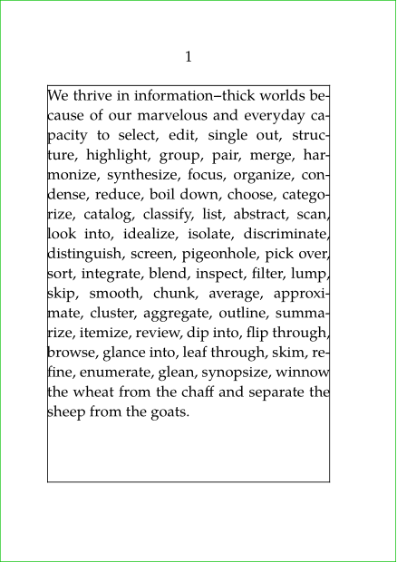
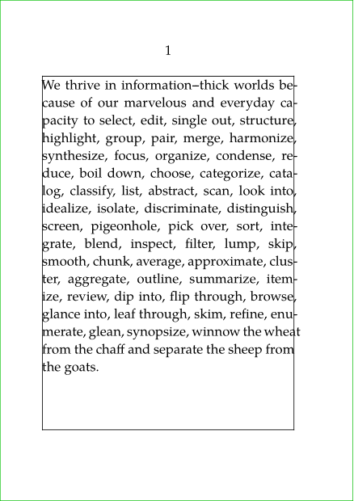
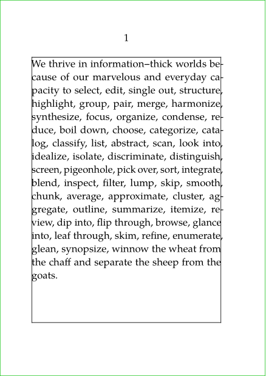
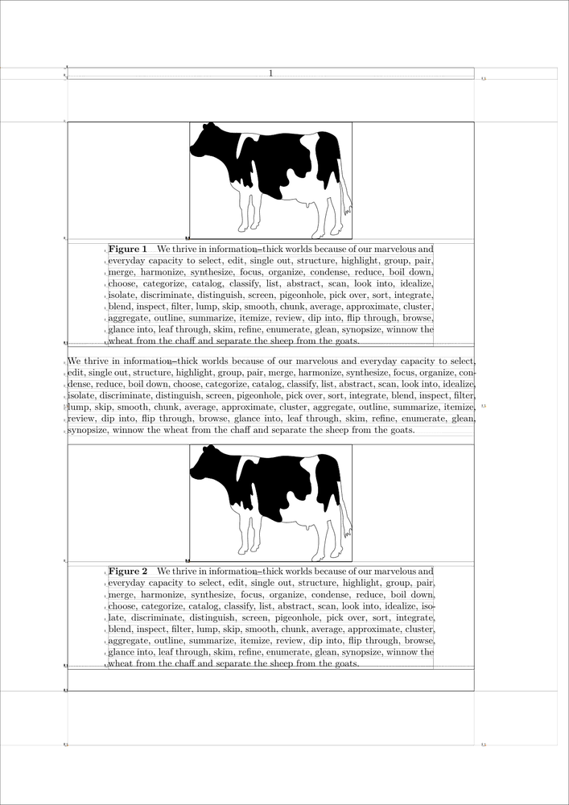
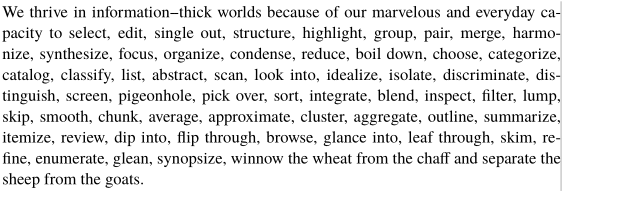
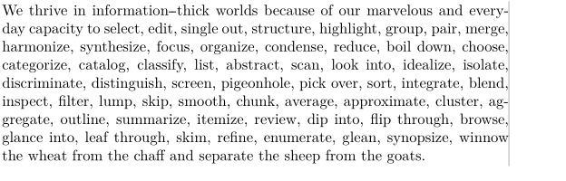

Contents
Character protrusion is a somewhat subtle advanced typographic effect in which some characters (often punctuation) are moved partially or fully into the margin in order to give it an optically smoother appearance. In ConTeXt, this is achieved via the font mechanisms within pdfTeX and LuaTeX. Much of the difficult work is done in some presets by Hans, but there are a few tricks needed in order to activate the feature.
This feature is also commonly called "Handling" after the font handling feature that enables it, and "Hanging" after what hyphens do into the margin. The microtype LaTeX package also includes a protrusion feature, and may be known by that name to a certain audience.
There are some differences between enabling character protrusion and the related font expansion feature between MkII and MkIV, so the following discusses both separately.
Protrusion and expansion are integrated into the font feature subsystem that is also used for OpenType features. Unless you are creating a totally new typescript, the easiest way to enable protrusion is to redefine the already existing 'default' font feature with \definefontfeature and, AFTER that, to load the font as usual with \setupbodyfont.
The setup of the behavior is defined with \setupalign.
\definefontfeature [default] [default] [protrusion=quality, expansion=quality] \setupbodyfont[pagella] \setupalign[hz,hanging]
The values for the protrusion and expansion keys are defined in font-ext.lua.
| protrusion | pure | full protrusion of only selected punctuation |
| punctuation | partial protrusion of punctuation and some asymmetrical letters | |
| alpha | variable correction of character widths | |
| quality | combination of punctuation and alpha | |
| expansion | default | variable glyph expansions for plain ascii text (alphabetics + numerals) |
| quality | same as default |
In ConTeXt LMTX it's possible to disable protrusion locally with \noprotrusion, e.g.:
{\noprotrusion \quotation{protrusion disabled here.}}
nohanging nohz
-
\setuppapersize[A7] \showframe[text][text] \definefontfeature % HERE [default] [default] [protrusion=quality, expansion=quality] \setupbodyfont[pagella] \setupalign [tolerant,hyphenated,justified, nohanging,nohz] % HERE \starttext \input tufte \stoptext
- 
hanging nohz
-
\setuppapersize[A7] \showframe[text][text] \definefontfeature % HERE [default] [default] [protrusion=quality, expansion=quality] \setupbodyfont[pagella] \setupalign [tolerant,hyphenated,justified, hanging,nohz] % HERE \starttext \input tufte \stoptext
- 
hanging hz
-
\setuppapersize[A7] \showframe[text][text] \definefontfeature % HERE [default] [default] [protrusion=quality, expansion=quality] \setupbodyfont[pagella] \setupalign [tolerant,hyphenated,justified, hanging,hz] % HERE \starttext \input tufte \stoptext
- 
MkIV
Just like in MkII, a reset trick is needed to get proper output from latin-modern fonts:
\definefontfeature[default][default][expansion=quality,protrusion=quality] \usetypescript[modern-base] \setupbodyfont[reset,modern] \setupalign[hz,hanging] \showframe \starttext \input tufte \stoptext
However in the current version (at least the beta 2011.02.25) there is no need to reset the bodyfont as loading is delayed till starttext anyway.
Caption alignment and protrusion
-
\definefontfeature [default] [default] [protrusion=quality] \setuppapersize[A4] \setupbodyfont[10pt] \setupcaptions [width=.8tw] \setupalign [hanging] \setupexternalfigures [location={local,global,default}] \showboxes \starttext \startbuffer \startplacefloat [figure] [title=\samplefile {tufte}] \externalfigure[cow][width=0.4tw] \stopplacefloat \stopbuffer \getbuffer \samplefile {tufte} \setupcaptions [align={hanging}] % HERE \getbuffer \stoptext
- 
MkII
Font handling is documented in the Fonts in ConTeXt manual.
Demo
The simplest way to illustrate it is with a quick demo:
\usetypescript[postscript][ec] \usetypescript[adobekb][ec] \usetypescript[serif][hanging][normal] % this creates the 'handling' synonyms \setupalign[hanging] % this actually triggers the feature
The first two lines switch the font (see below for Latin Modern), and the second two lines actually activate the feature.
\setupbodyfont[postscript] \starttext \input tufte \stoptext
Switch the font that we setup, and show an example with lots of punctuation. The illustration has normal hanging enabled:
-
\usetypescript[postscript][ec] \usetypescript[adobekb][ec] \usetypescript[serif][hanging][normal] % this creates the 'handling' synonyms \setupalign[hanging] % this actually triggers the feature \setuptolerance[tolerant] \setupbodyfont[postscript] \setupcolors[state=start] \startframedtext [width=270pt,rightframe=on,frame=off, align=hanging,offset=none,framecolor=middlegray] \input tufte \stopframedtext
- 
Details
The \usetypescript command has three arguments. The definitions that we use are in type-exa.tex, and reference the low-level definitions in hand-def.tex. There are different possible values for each argument, which, by convention, are:
\usetypescript [family] [trigger] [type]
| family | serif, sans, and/or mono | |
| trigger | handling or hanging for protrusion; handling or hz for font expansion | |
| type | pure | full protrusion of only selected punctuation |
| normal | partial protrusion of punctuation and some asymmetrical letters | |
| hz | variable correction of character widths | |
| quality | combination of hz and pure | |
| highquality | combination of hz and normal | |
Use with Latin Modern
Because ConTeXt pre-loads its default Latin Modern font, it is a little tricky to get it to work right. Here is one solution, where you setup the hanging, load an alternative latin-modern typescript, and then reset the defaults:
\usetypescript[serif,sans,mono][hanging][pure] \setupalign[hanging] \usetypescript[modern-base][texnansi] % a simplified latin-modern typescript \setupbodyfont[reset] \setupbodyfont[modern]
The illustration has pure hanging enabled:
-
\usetypescript[serif][hanging][pure] % this creates the 'handling' synonyms \setupalign[hanging] % this actually triggers the feature \usetypescript[modern-base][texnansi] \setupbodyfont[reset] \setupbodyfont[modern] \setupcolors[state=start] \startframedtext [width=270pt,rightframe=on,frame=off, align=hanging,offset=none,framecolor=middlegray] \input tufte \stopframedtext
- 
Hz adjustments
For more radical effects, where you need to fit to a fixed, narrow measure, you can enable Hz-style font adjustments, wherein individual characters are adjusted by miniscule amounts as necessary. These are enabled by the hz, quality, and highquality options listed above. Usage is with such lines as:
\usetypescript[serif][hz][quality] % this creates the 'handling' synonyms \setupalign[hanging,hz] % this turns on the hanging and hz features
The example shows how slight font expansion improves the fitting to the margin without changing the tolerance on the inter-word spacing. The left passage is with hanging alone enabled, and the right is with hanging and hz both enabled. It's not for everyone, as the process can distort letter shapes.